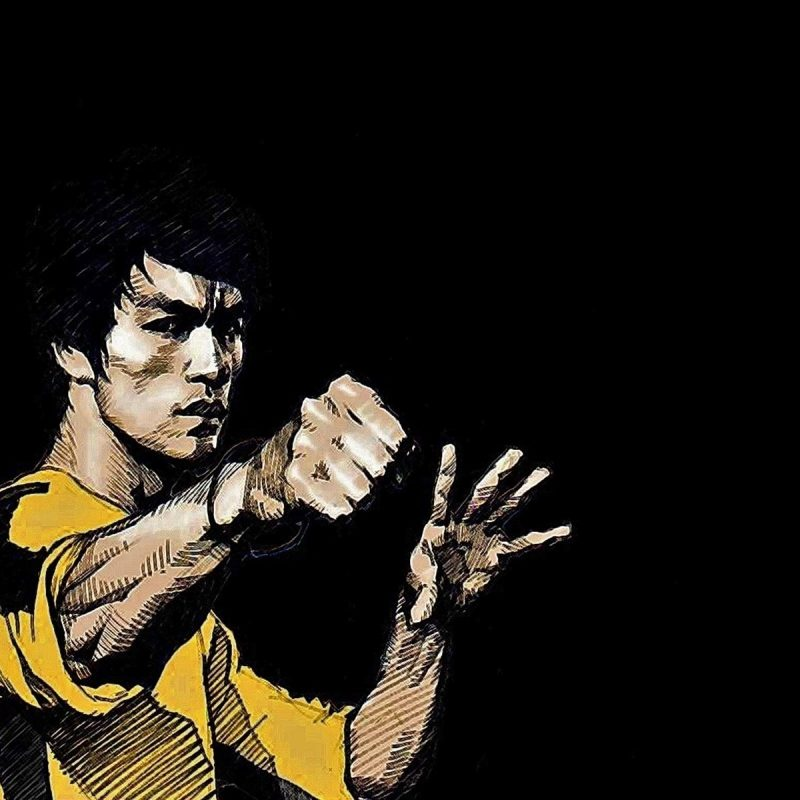
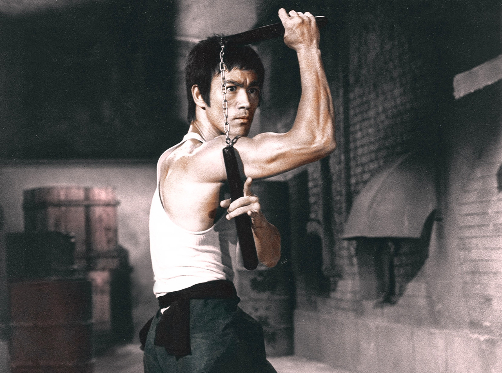

Bruce Jun Fan Lee was born in San Francisco in the hour and the year of the Dragon, a powerful symbol in Chinese astrology and a strong omen of the life he was to live.
“Adapt what is useful, reject what is useless, and add what is specifically your own.”

1940 - Born in San Francisco, California on November 27.
1954 - Begins studying Wing Chun Gung Fu under Yip Man in Hong Kong
1958 - Becomes the Crown Colony Cha-Cha Champion in Hong Kong.
1959 - Departs Hong Kong for the United States, arriving in San Francisco, California before settling in Seattle, Washington.
1963 - Son Brandon Bruce Lee is born.
1967 - Opens third Jun Fan Gung Fu Institute in Los Angeles Chinatown. First time the name Jeet Kune Do appears in writing.
1969 - Daughter Shannon Emery Lee is born.
1971 - Stars in “The Big Boss”. The film breaks all box office records in Hong Kong. Guest stars in TV show “Longstreet”.
1972 - Stars in “Fist of Fury”. Appears with son, Brandon, on Hong Kong TVB Operation Relief telethon to help raise funds to aid victims of a recent typhoon and makes a personal donation of $10,000 Hong Kong dollars. Writes, directs, produces, choreographs and stars in “The Way of the Dragon”. Each film surpasses the previous in box office results in Hong Kong. Begins filming “Game of Death”.
2001 - Bruce is named by Premier Magazine as the 3rd most influential deceased show business talent (behind #1 Walt Disney and #2 Stanley Kubrick).
2004 - Receives the EMMA (Ethnic Multicultural Media Academy) Legacy Award in London for his humanitarian achievement through the spiritual philosophy of martial arts which challenged racism and added substance to our lives; other recipients include Ghandi and Martin Luther King.
2005 - A life-size statue of Bruce Lee is unveiled in Mostar, Bosnia as a symbol of the fight against ethnic divisions. A statue of Bruce is unveiled in Hong Kong the next day.
2012 - The United States House of Representatives pays tribute to Bruce Lee with an official congressional tribute on the House Record honoring his achievements and contributions to society, calling him a master teacher, a catalyst for social change and civil rights, and a cultural and American icon.
2015 - Bruce Lee is inducted into the California Museum’s Hall of Fame by Governor Jerry Brown alongside Charles M. Schulz, David Hockney, Lester Holt, Ellen Ochoa, Robert Downey Jr, Kristi Yamaguchi, and Buck Owens. The honor is accompanied by a year-long exhibit.
2016 - The United States House of Representatives pays tribute to Bruce Lee with an official congressional tribute on the House Record honoring his achievements and contributions to society, calling him a master teacher, a catalyst for social change and civil rights, and a cultural and American icon.
Learn more about Bruce Leemore about his incredible story.